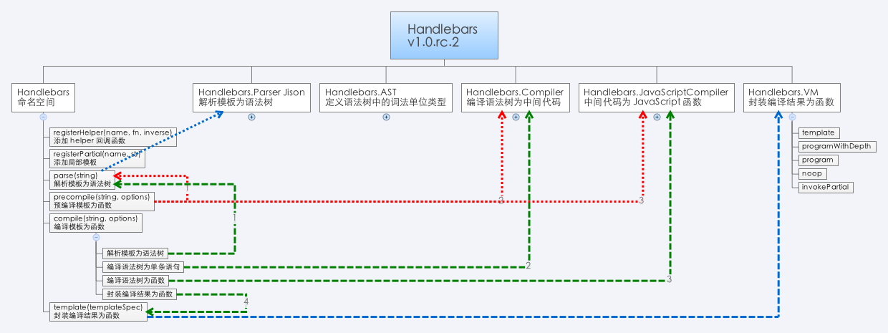

前端模板引擎 @nuysoft
参考资料
- The client-side templating throwdown: mustache, handlebars, dust.js, and more
- Template Engine Chooser
- Is this for use on the client or the server?
- How much logic should it have?
- Does it need to be one of the very fastest?
- Do you need to pre-compile templates?
- Do you need partials?
- Do you want a DOM structure, or just a string?
- Aside from template tags, should it be the same language before and after rendering?
- JavaScript宝座：七大框架论剑
- Is there something like pyparsing for JavaScript?
- Comparison of parser generators
- ANTLR、APG、JS/CC、kmyacc、Lapg、OMeta、PEG.js、PetitParser、Waxeye、Jison
- Beetl:现代模板引擎应该具有的7大特征
- 低侵入性、性能良好、错误提示、安全、可测试、扩展性良好、指令简单易学
- JavaScript templates
- What Javascript Template Engines you recommend?
- Best Practices When Working With JavaScript Templates
- JavaScript Templating: Adding HTML the Right Way
- 13 款 JavaScript 模板引擎
- 如何实现 Velocity 模板语法解释器
参考模板引擎
- mustache.js
- _github janl/mustache.js
- Handlebars.js
- _github wycats/handlebars.js
- Dust
- _github akdubya/dustjs
- Google Closure Templates
- Hogan.js
- _github twitter/hogan.js
- Micro-Templating
- Create: 2008-7-16
- Underscore Templating
- _github documentcloud/underscore
- doT
- _github olado/doT
- EJS
- _github visionmedia/ejs
- nTenjin
- _github QLeelulu/nTenjin
- 腾讯 artTemplate
- _github aui/artTemplate
- 百度 AceTemplate
- 百度 baiduTemplate
- _github wangxiao/BaiduTemplate
- 淘宝 承玉 KISSY xtemplate
- 文档
- _github kissyteam/kissy
- 淘宝 翰文 Velocity.js
- _github shepherdwind/velocity.js
- 淘宝 流火 Juicer
- _github PaulGuo/Juicer
前言开光 - 混乱之治
随着前端应用技术的发展，出现了各种 JavaScript 模板引擎，也随着而来各种概念、号称、噱头，本文旨在：
- 学习模板引擎的使用。
- 分析模板引擎的实现。
基于模板编程已经是一种水到渠成的开发方式，有着模块化、协同开发、便于调试和维护等诸多好处。与 Model-View-Contrl 或 Model-View-ViewModel 或 Model-View-Whatever 中的 View 结合使用，非常方便。
概述
模板引擎大都由 5 部分组成：语法、解析、编译、缓存、渲染。

语法，定义模板书写方式
- Embedded JavaScript Templates，基于原生 JS 语法，解析简单、渲染性能接近极限；书写略烦，容易导致模板中出现过多的业务代码而失控。
- Logic-less Templates，基于自定义语法，解析复杂、渲染性能不一
或者也可以分为：
- 弱逻辑语法
- 强逻辑语法
不过 mustache 说：
What could be more logical awesome than no logic at all?
解析，包括词法分析（lexical analysis、scanning）和语义分析（syntax analysis、parsing）两步。
- 手写解析器，基于正则的字符串解析、转义
- 基于解析器生成器自动生成
- 基于 DOM 结构存储模板，解析存储在 data- 的配置
编译，模板为直接可直接运行的函数
- 及时编译
- 预编译
- 延迟编译
缓存，用于提升性能
- 缓存编译结果（函数）
- 缓存渲染过程中涉及的数据（查找结果，字符串）
- 不缓存，由用户缓存
渲染，执行编译结果，生成 HTML
- 优先从缓存中读取
各种模板引擎主要是解析方式的不同，语法、编译、缓存、渲染则各有权衡。 接下来介绍和分析国内外一些常见的模板引擎。
后记 - 和而不同
把后记写在这里，是因为本文有点长，另外。。。
本文是边看源码边记录而成，尚粗糙不堪，自己却又渐觉无味，也没有自己写一个模板引擎的颠覆性灵感和冲动，兴趣也转向了编译原理、Flex&Bison、Jison，因此。。。估计就到这里了，也就是说要烂尾了，就像之前写的 Backbone 系列，实在是惭愧。
Mustache
解析
以 <div>{{foo}}</div> 为例：
解析文本、标记、标记值。
[ ["text", "<", 0, 1], ["text", "d", 1, 2], ["text", "i", 2, 3], ["text", "v", 3, 4], ["text", ">", 4, 5], ["name", "foo", 5, 12], ["text", "<", 12, 13], ["text", "/", 13, 14], ["text", "d", 14, 15], ["text", "i", 15, 16], ["text", "v", 16, 17], ["text", ">", 17, 18] ]合并连贯的 text 标记为一个标记。
[ ["text", "<div>", 0, 5], ["name", "foo", 5, 12], ["text", "</div>", 12, 18] ]格式化给定的标记数组为一个嵌套的树状结构。
[ ["text", "<div>", 0, 5], ["name", "foo", 5, 12], ["text", "</div>", 12, 18] ]
编译
编译语法树为函数，封装渲染函数。
function(view, partials) {
if(partials) {
if(typeof partials === 'function') {
self._loadPartial = partials;
} else {
for(var name in partials) {
self.compilePartial(name, partials[name]);
}
}
}
return renderTokens(tokens, self, Context.make(view), template);
}缓存
- 通过对象实现，属性是模板字符串，值是编译结果。
- 为属性值设置了缓存。
- 局部模板缓存（？TODO）
渲染
遍历语法树，根据词法单元的类型拼接字符串。
function renderTokens(tokens, writer, context, template) {
var buffer = '';
var token, tokenValue, value;
// 遍历标记树，根据标记类型拼接字符串
for(var i = 0, len = tokens.length; i < len; ++i) {
token = tokens[i]; // 标记
tokenValue = token[1]; // 标记值
switch(token[0]) { // 标记类型
case '#':
value = context.lookup(tokenValue);
if(typeof value === 'object') {
if(isArray(value)) {
for(var j = 0, jlen = value.length; j < jlen; ++j) {
buffer += renderTokens(token[4], writer, context.push(value[j]), template);
}
} else if(value) {
buffer += renderTokens(token[4], writer, context.push(value), template);
}
} else if(typeof value === 'function') {
var text = template == null ? null : template.slice(token[3], token[5]);
value = value.call(context.view, text, function(template) {
return writer.render(template, context);
});
if(value != null) buffer += value;
} else if(value) {
buffer += renderTokens(token[4], writer, context, template);
}
break;
case '^':
value = context.lookup(tokenValue);
// Use JavaScript's definition of falsy. Include empty arrays.
// See https://github.com/janl/mustache.js/issues/186
if(!value || (isArray(value) && value.length === 0)) {
buffer += renderTokens(token[4], writer, context, template);
}
break;
//
case '>':
value = writer.getPartial(tokenValue);
if(typeof value === 'function') buffer += value(context);
break;
// 读取值、拼接字符串
case '&':
value = context.lookup(tokenValue);
if(value != null) buffer += value;
break;
// 读取值、转义 HTML 字符，拼接字符串
case 'name':
value = context.lookup(tokenValue); // 获取值
if(value != null) buffer += exports.escape(value); // 转义 HTML 字符
break;
case 'text':
buffer += tokenValue;
break;
}
}
return buffer;
}数据结构、方法功能、调用关系

Handlebars
解析
通过 Jison 生成解析器，然后解析模板为语法树。
- 词法 src/handlebars.l
- 语法 src/handlebars.yy
编译
- 编译语法树为单条语句（语义化）。
- 编译语法树为函数（转换为 JavaScript 代码）。
- 封装编译结果为函数。
渲染
执行函数，拼接字符串。
缓存
- 没有缓存！
- 延迟编译
- 利用闭包机制避免重复编译
关键步骤示例
以 '<div>{{abc}}</div>' 为例：
var ast = Handlebars.parse(string);
// var ast = Handlebars.parse(string); { "type": "program", "statements": [{ "type": "content", "string": "<div>" }, { "type": "mustache", "escaped": true, "hash": null, "id": { "type": "ID", "original": "foo", "parts": ["foo"], "string": "foo", "depth": 0, "isSimple": true, "stringModeValue": "foo" }, "params": [], "eligibleHelper": true, "isHelper": null }, { "type": "content", "string": "</div>" }] }var environment = new Handlebars.Compiler().compile(ast, options);
// var environment = new Handlebars.Compiler().compile(ast, options); { "children": [], "depths": { "list": [] }, "options": { "data": true, "knownHelpers": { "helperMissing": true, "blockHelperMissing": true, "each": true, "if": true, "unless": true, "with": true, "log": true } }, "opcodes": [{ "opcode": "appendContent", "args": ["<div>"] }, { "opcode": "getContext", "args": [0] }, { "opcode": "pushProgram", "args": [null] }, { "opcode": "pushProgram", "args": [null] }, { "opcode": "invokeAmbiguous", "args": ["foo", false] }, { "opcode": "appendEscaped", "args": [] }, { "opcode": "appendContent", "args": ["</div>"] }], "isSimple": false }var templateSpec = new Handlebars.JavaScriptCompiler().compile(environment, options, undefined, true);
// var templateSpec = new Handlebars.JavaScriptCompiler().compile(environment, options, undefined, true); function anonymous(Handlebars, depth0, helpers, partials, data) { helpers = helpers || Handlebars.helpers; data = data || {}; var buffer = "", stack1, functionType = "function", escapeExpression = this.escapeExpression; buffer += "<div>"; if(stack1 = helpers.foo) { stack1 = stack1.call(depth0, { hash: {}, data: data }); } else { stack1 = depth0.foo; stack1 = typeof stack1 === functionType ? stack1.apply(depth0) : stack1; } buffer += escapeExpression(stack1) + "</div>"; return buffer; }Handlebars.template(templateSpec);
// Handlebars.template(templateSpec); function(context, options) { options = options || {}; return templateSpec.call(container, Handlebars, context, options.helpers, options.partials, options.data); }
数据结构、方法功能、调用关系

dust
Asynchronous templates for the browser and node.js
The rendering engine provides both callback and streaming interfaces.
所谓的“异步”
执行编译结果时，通过 setTimeout(callback, 0); 执行，相关代码如下：
dust.stream = function(name, context) {
var stream = new Stream();
dust.nextTick(function() {
dust.load(name, stream.head, Context.wrap(context)).end();
});
return stream;
};
dust.compileFn = function(source, name) {
var tmpl = dust.loadSource(dust.compile(source, name));
return function(context, callback) {
var master = callback ? new Stub(callback) : new Stream();
dust.nextTick(function() {
tmpl(master.head, Context.wrap(context)).end();
});
return master;
}
};
dust.nextTick = function(callback) {
setTimeout(callback, 0);
}解析
PEG.js is a simple parser generator for JavaScript that produces fast parsers with excellent error reporting. You can use it to process complex data or computer languages and build transformers, interpreters, compilers and other tools easily.
编译
TODO
缓存
存储在全局属性 dust.cache 中，以 key-value 的格式存储。相关代码如下所示：
dust.cache = {};
dust.register = function(name, tmpl) {
if (!name) return;
dust.cache[name] = tmpl;
};
dust.load = function(name, chunk, context) {
var tmpl = dust.cache[name];
if (tmpl) {
return tmpl(chunk, context);
} else { ... }
};
function compile(ast, name) {
// ...
return "(function(){dust.register("
+ (name ? "\"" + name + "\"" : "null") + ","
+ dust.compileNode(context, ast)
+ ");"
+ compileBlocks(context)
+ compileBodies(context)
+ "return body_0;"
+ "})();";
}渲染
TODO
数据结构、方法功能、调用关系
TODO
Micro-Templating
实现：new Function() + with()
- 富逻辑。
- 原生语法的性能要远远高于自定义语法。
解析
提取 HTML、JS 代码
编译
new Function()
缓存
基于缓存对象和 ID 缓存编译结果。
渲染
执行函数
Underscore Templating
JavaScript micro-templating, similar to John Resig's implementation.
Underscore templating handles arbitrary delimiters, preserves whitespace, and correctly escapes quotes within interpolated code.
实现：new Function() + with()
EJS
源自 Micro-Templating。
new Function() + with()
核心代码 exports.parse(str, options)、exports.compile(str, options)。
artTemplate
源自 Micro-Templating。
解析
因为基于原生 JS 语法，因此需要解析的工作不多，主要工作在编译时实现。
编译
内部函数 _compile(source, debug) 执行的关键步骤：
缓存
- 用内部对象和 ID 实现。
- 没有针对模板的缓存。
- 没有逃脱 Micro-Templating 的思维。
- 在性能测试中取巧了。
渲染
编译时通过声明变量，解决了 Micro-Templating 中 with() 性能极低的问题。
总体结构、方法功能、调用关系

aceTemplate
源自 Micro-Templating。
实现：new Function() + with()
- 对于 input、textarea 元素会读取属性 value，其他元素默认读取 innerHTML。
- 很别扭的 JS + HTML 混编语法
- 解析过程略显复杂，混编语法所致
- 文档很烂，标题无法直视：世界上最好用的纯前端模板【没有之一】
baiduTemplate
源自 Micro-Templating。
将数据中的所有属性作为顶层变量，在函数头部声明，用以替换 with()。
for(name in data) {
_template_varName += ('var ' + name + '=data[\"' + name + '\"];');
};
eval(_template_varName);Juicer
实现源自 Micro-Templating。
方法 juicer.template.parse() 执行的关键步骤：
- __lexicalAnalyze(tpl) 解析模板中用到的变量，并声明。
- __removeShell(tpl, options) 将自定义语法等价转换为 Micro-Templating 语法。
- __convert(tpl, strip) 提取其中的 JS、HTML，构造函数。
Closure Templates
http://code.google.com/closure/templates/
- 语法相对比较严谨，有命名空间和模板名的概念。
- 采用预编译策略，因此开发和调试的步骤繁琐：
- 编辑 Soy 文件，含有命名空间和模板名。
- 编译 Soy 文件为 JS 文件。
- 在 HTML 中引入 JS 文件。
- 调用输出方法：命名空间+模板名。
- 文件太大
- SoyToJsSrcCompiler.jar 11MB
- soyutils.js 91KB
TODO
- 模板存储和加载方式
- DOM
- script
- 文件
- 性能因素
- 语法
- 及时编译、预编译、延迟编译
- 缓存
- 性能测试
- 编译
- 渲染
- 框架引擎比较
- 依赖
- 语法
- 性能
- 错误提示
- 安全
- 详细的源码分析
- 示例（入门）
- 特性
- 关键步骤
- 源码分析
- 总结、结构图
- 编译原理
后记 - 和而不同
TODO
某人说 TODO 是程序员的最大谎言，我替他们认了。